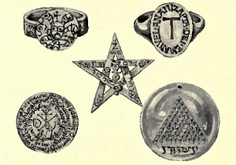

|  | The Book of Talismans, Amulets and Zodiacal Gemsby William Thomas and Kate Pavitt[1922] |
This is a study of the symbolism of precious stones, and how they have been used as magical objects through the ages, both intrinsically, and as a vehicle for symbolic engravings. The Pavitts cover Hindu, Jewish, Chinese, Egyptian, Roman, Gnostic, and Christian lore of gems. The final section discusses the astrological connections of key gems, sign by sign. This work also includes quite a bit of history of important (and often 'cursed') stones such as the Hope diamond, and practical advice about purchasing gems. Anyone interested in the symbolism of gemstones will find this a great reference and a fascinating read.--J.B. Hare, September 11, 2008.
Title Page
Preface
Contents
List of Plates
Part I. Amulets and Talismans
Chapter IChapter II
Chapter III
Chapter IV
Chapter V
Chapter VI
Chapter VII
Chapter VIII
Chapter IX
Chapter X
Chapter XI
Chapter XII
Pat II. The Gems of the Zodiac
Chapter I. Aries—The RamChapter II. Taurus—The Bull
Chapter III. Gemini—The Twins
Chapter IV. Cancer—The Crab
Chapter V. Leo—The Lion
Chapter VI. Virgo—The Virgin
Chapter VII. Libra—The Balance
Chapter VIII. Scorpio—The Scorpion
Chapter IX. Sagittarius—The Archer
Chapter X. Capricorn—The Goat
Chapter XI. Aquarius—The Water-Bearer
Chapter XII. Pisces—The Fishes
Real and Artificial Gems and How to Test and Select Them
Bibliography
Index